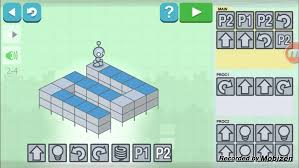
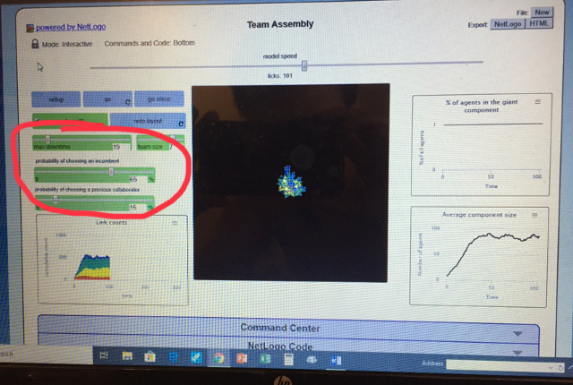
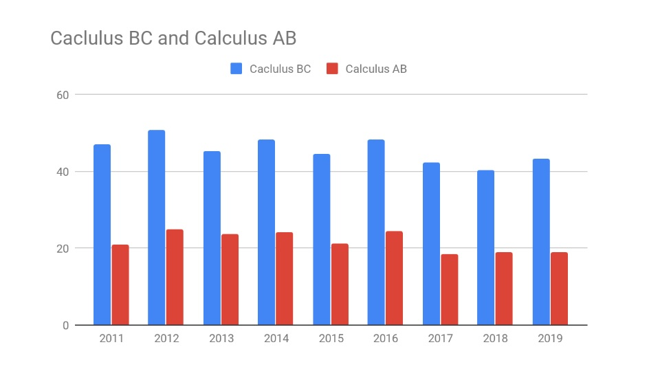

Home
Portfolio
About Me
This is my portfolio

This is my scratch program! I made a multiplayer soccer game. The variety of code blocks
I used ranges from player one moving left when the D key is pressed to the soccerball broadcasting
a signal when its X coordinate exceeds 240 or falls under -240. The game also has a game
and a win soundtrack. the game is fully functional. The only glitch that I couldn't fix is
half the time green pushes the ball into purple, the ball won't go up. The game is rudimentary
but it is functional and could be sold as a product.
This is our MIT App Inventor Code and the working app. We created a text to speech app
which comes preloaded with some copypastas and some dead vines. My partner and I decided
to do this project when we thought that we could add a meme tab with dead vines and
some twitch.tv copypastas. The app is fully functional and is meant to make people
smile. This app doesn't have any glitches that i’m aware of, and could be sold as a
product. The program was fun to create and the best part of creating the product was
deciding which memes to add. Enjoy.


This is our python interactive fiction project called Cabin Adventure. The interactive
fiction is an “Overcome the monster” type deal. If you click the green “run” button and wait
a couple of seconds, you’ll be able to play the program right here! You can slide the bar in
between the code and the iPython to either look at the code better or to just play the game.
PLEASE don’t type in the code area, since its live and any edits you make there will be applied
to the original. The way the program works is that each action is a miniature program, and
depending on your response, it will call up the following corresponding program. Feel free to
look through the code or play the game.
The netlogo simulation I used was a team assembly simulation. The things that I changed are
circled in Red. I lowered the probability of someone choosing someone they have previously worked
with. I raised the probability of someone choosing someone they haven't worked with. I also increased
group size. I let the simulation run for 101 ticks.

This is my big data Graph. My question was "Are you more likely to gat a five on the Calculus AB AP
test rather than the Calculus BC AP test?" The answer was quite surprising. On the BC test, the average
percent of people who got a five was around 45%, but on the AB test the average was around 20%. The
graph is below.
